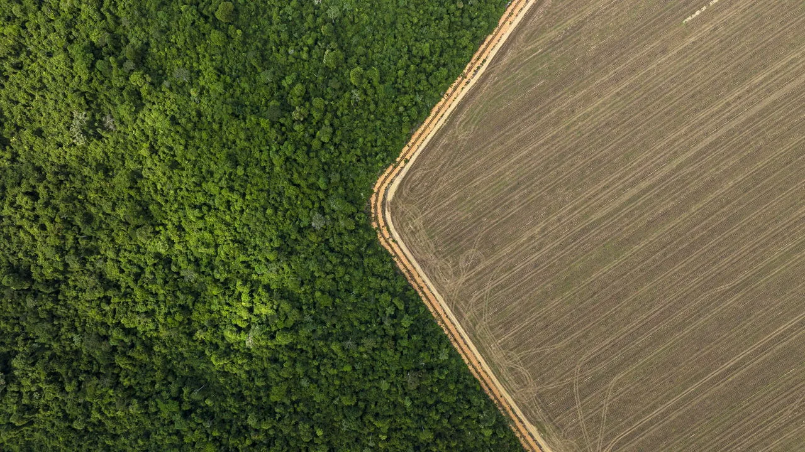

Effects of Deforestation
Deforestation has serious and far-reaching consequences. It affects ecosystems, wildlife, the climate, and human communities around the world.
1. Climate Change
Trees absorb carbon dioxide (CO₂), a greenhouse gas that contributes to global warming. When forests are destroyed, not only do we lose this carbon sink, but the carbon stored in trees is also released into the atmosphere.
2. Loss of Biodiversity
Forests are home to over 80% of all terrestrial animals and plants. Deforestation destroys these habitats, pushing countless species toward extinction.
3. Soil Erosion
Tree roots hold soil in place. When forests are removed, rain washes away the topsoil, making the land infertile and increasing the risk of landslides.
4. Disruption of the Water Cycle
Forests help regulate rainfall and water flow. Deforestation can reduce rainfall and lead to droughts or floods in nearby regions.
5. Impact on Indigenous Communities
Millions of people around the world depend on forests for food, shelter, medicine, and culture. Deforestation often displaces indigenous communities and threatens their way of life.
The good news is: these effects can be reversed. Let's look at the solutions that can help us protect and restore our forests.